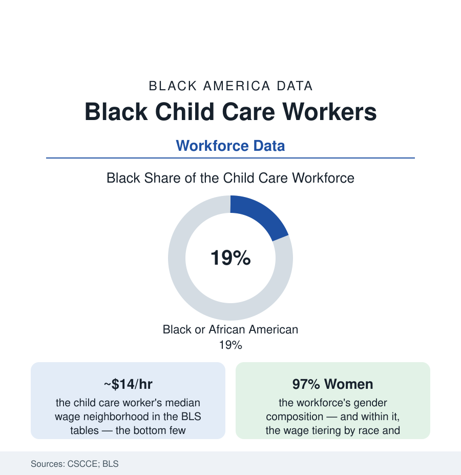

Black Employment
Child Care Workers: The Workforce That Makes All Other Work Possible
Black women are roughly a fifth of America's child care workforce — paid near the bottom of the entire wage table to do the economy's most foundational job. The workforce data.

Every workforce in this section clocks in because this one does: child care is the infrastructure under all other labor, and its workforce — about a million center-based educators and hundreds of thousands of home-based providers in the federal counts, ninety-seven percent women, roughly a fifth of them Black — is paid at the very bottom of the American wage table, a median in the neighborhood of fourteen dollars an hour in the recent BLS data. The early-childhood file in the education section described what this workforce produces. This article reads what it is paid, and the long history inside the rate.
The Wage File: Poverty Rates for the Poverty Fighters
The Center for the Study of Child Care Employment's index states the file's core numbers without decoration: child care workers' poverty rates running in the low-to-mid teens of percent — several times the rate for workers overall — with Black early educators' poverty and public-benefits reliance at the top of the workforce's own table (the wage penalty by race inside the same job, and a second penalty by the age of the children: the infant-toddler teachers, disproportionately Black in the staffing data, paid less than the preschool teachers in the same buildings — the younger the child, the darker and cheaper the workforce, a gradient the index has documented across editions). The benefits data complete the compensation picture (the employer health coverage and retirement participation at fractions of the K-12 workforce's), the turnover data price the instability (annual turnover in the quarter-to-a-third range in the state workforce studies — the child's attachment figure replaced on the school year's rhythm), and the home-based tier runs beneath the center data at lower visibility (the family child care provider's effective hourly rate, computed over the twelve-hour day in the provider surveys, at the table's floor — her home the facility, her own children inside the ratio). The public investment comparison is the file's standing rebuke: the K-12 teacher of the education section, publicly salaried for the same developmental science four years later in the child's life, at two to three times the compensation.
The History Inside the Rate
The wage is not an accident of the market's innocence; the labor historians trace its design: the care of children was built in America first as enslaved labor, then as the domestic-service tier the New Deal's labor standards deliberately excluded (the domestic and agricultural carve-outs of the Social Security and labor acts — the workforce then being Black women in other women's kitchens and nurseries), then as the 'mother's work' the wage system priced as love rather than labor. The professionalization century ran on that foundation: the nursery-school movement's credentialed (whiter, salaried) tier above the day-nursery (Blacker, custodial) tier in the early institutions' own records, the Head Start era hiring the community's mothers as its first workforce (the program's founding design — employment as intervention, two generations in one budget), and the modern credential ladder (the CDA, the AA and BA requirements of the quality-rating systems) raising the profession's paper while its wage line stayed at the century's level — the degree-holding early educator's pay against the degree-holding anything-else's in the CSCCE comparisons. The union and organizing file is the current chapter: the home-based providers' unionization fights of the last two decades (the state-by-state bargaining rights won in the family-child-care tier — among the largest union organizing victories of the era by headcount, substantially Black and Latina women), the center workers' campaigns inside the service unions, and the pandemic's brief, documented moment of public arithmetic (the essential-worker designation without the essential wage, the stabilization grants' wage pass-throughs measured and then expired).
The Current Ledger: Shortages and the Subsidy Machine
The post-pandemic data describe a workforce market failing in the open: the programs unable to staff classrooms in the state surveys (the licensed seats existing, the teachers not — the capacity shortage measured in unopened rooms), the wage competition from the retail and warehouse tiers (the fourteen-dollar job with a toddler ratio of four-to-one against the fifteen-dollar job with none — the staffing data's arithmetic of exit), the subsidy system's rates (the state reimbursement schedules pegged to market-rate surveys of a market the rates themselves suppress — the circularity in the policy literature's own diagrams), and the public experiments graded in the recent years (the wage-supplement and salary-scale pilots — the District of Columbia's pay equity fund raising its early educators toward the K-12 scale in the nation's first full test, its workforce-stabilization results published and watched by every statehouse with a bill). The ownership bridge to the business file closes the loop: the center directors and family providers of this workforce are the childcare-centers file's owners — the same women, one rung up the same ladder, buying the building the wage wouldn't.
Reading the Child Care Data
A fifth of the workforce that raises the workforce, at the wage table's floor, with a poverty rate its own profession exists to prevent: the child care file is the employment section's foundation stone and its standing question — whether a country gets the care it pays for is not a mystery in any dataset here. It gets exactly that, staffed by women whose own children are in somebody else's ratio. The index publishes the numbers annually. They move when the money does.
More in Black Employment
The Black Unemployment Rate: The Two-to-One Pattern
Black unemployment runs at roughly twice the White rate — 5.5 percent against 3.3 percent in annual averages — a ratio stable across five decades of federal data. How it is measured and why it persists.
Black Median Weekly Earnings: The 80-Cent Ratio
Black full-time workers earn a median of about $900 a week — roughly 80 cents for every dollar White workers earn. The BLS earnings data by group, gender, and occupation.
Black Labor Force Participation: Working at National Rates
Black labor force participation runs at roughly the national rate — and Black women participate at higher rates than White women. The BLS participation data.
Source: Center for the Study of Child Care Employment (UC Berkeley); U.S. Bureau of Labor Statistics; National Women's Law Center; Administration for Children and Families.